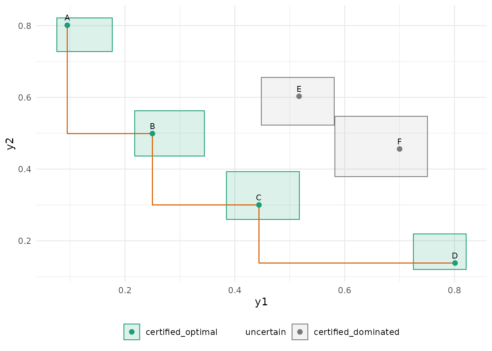
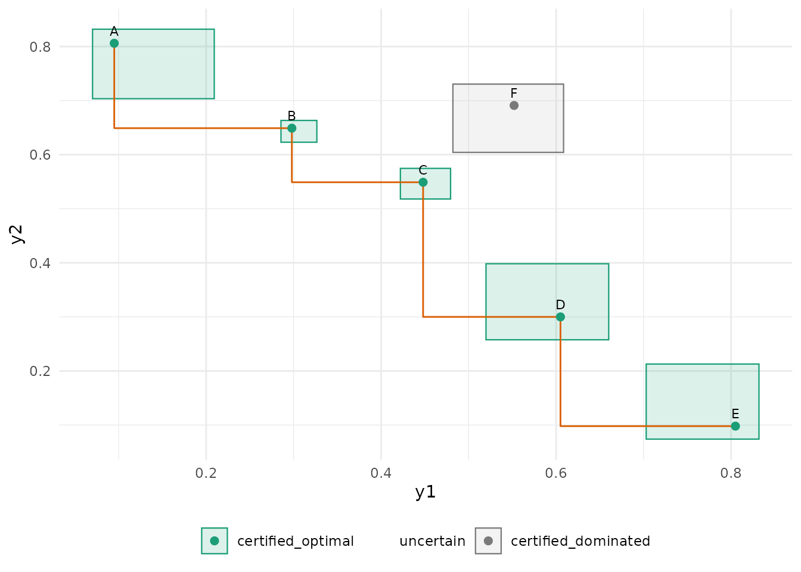
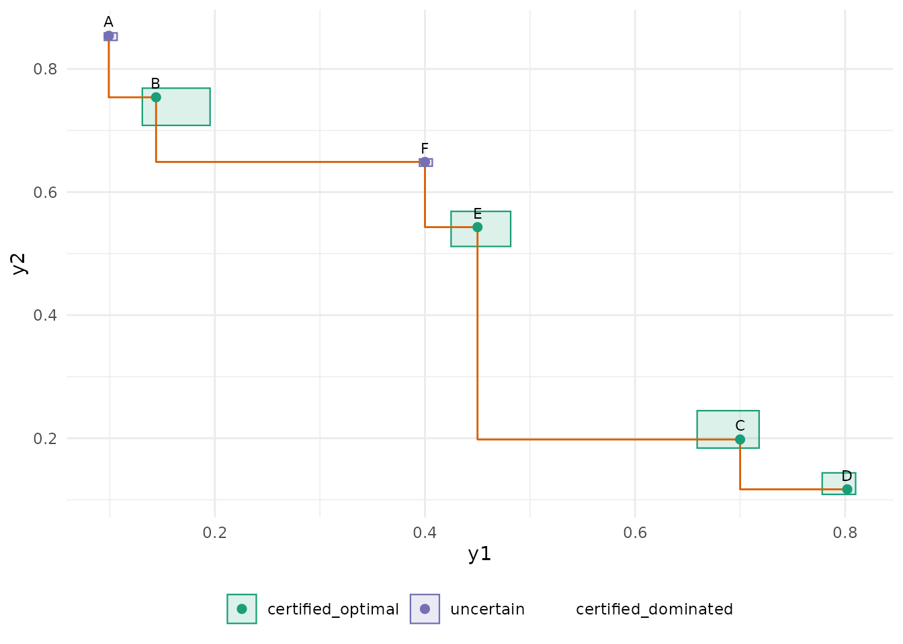

Identification with confidence boxes does not care whether the frontier is convex: a certificate compares two boxes, objective by objective. This vignette runs the procedure on the frontier shapes that trouble scalarised methods (weighted sums find only the convex hull) and on near-ties, and shows what the three sets look like in each case.
make_sim <- function(means, h = 0.08) {
function(alternative, n) {
mu <- means[alternative, ]
data.frame(y1 = runif(n, mu[1] - h, mu[1] + h), y2 = runif(n, mu[2] - h, mu[2] + h))
}
}
run <- function(means, epsilon = 0.04, seed = 1, ...) {
d <- pareto_design(alternatives = rownames(means), objectives = c("y1", "y2"),
bounds = c(0, 1), alpha = 0.05, epsilon = epsilon, max_evaluations = 4000, ...)
set.seed(seed)
pareto_run(d, make_sim(means), batch = 5, initial = 5)
}Convex frontier
convex <- rbind(A = c(0.10, 0.80), B = c(0.25, 0.50), C = c(0.45, 0.30), D = c(0.80, 0.15),
E = c(0.50, 0.60), F = c(0.70, 0.45))
s <- run(convex)
plausible_pareto_set(s)
#>
#> ── Pareto sets ──
#>
#> • Estimated frontier: "A", "B", "C", and "D"
#> • Plausible: "A", "B", "C", and "D"
#> • Certified optimal: A, B, C, D
#> • Uncertain: none
#> • Certified dominated: E, F
#> ✔ Identified: every alternative is certified.
autoplot(s)
Concave (non-convex) frontier
The middle alternative C is Pareto-optimal but lies
above the segment that joins its neighbours, so no weighted sum of the
objectives would select it. The boxes certify it without difficulty.
concave <- rbind(A = c(0.10, 0.80), B = c(0.30, 0.65), C = c(0.45, 0.55), D = c(0.60, 0.30),
E = c(0.80, 0.10), F = c(0.55, 0.70))
s <- run(concave)
plausible_pareto_set(s)$table[, c("alternative", "status", "dominated_by", "n_evaluations")]
#> # A tibble: 6 × 4
#> alternative status dominated_by n_evaluations
#> <chr> <chr> <chr> <int>
#> 1 A certified_optimal NA 90
#> 2 B certified_optimal NA 315
#> 3 C certified_optimal NA 215
#> 4 D certified_optimal NA 80
#> 5 E certified_optimal NA 90
#> 6 F certified_dominated C 90
autoplot(s)
Disconnected frontier
Two clusters of optimal alternatives with a dominated gap between them.
disconnected <- rbind(A = c(0.10, 0.85), B = c(0.15, 0.75), C = c(0.70, 0.20), D = c(0.80, 0.12),
E = c(0.45, 0.55), F = c(0.40, 0.65))
s <- run(disconnected)
plausible_pareto_set(s)$table[, c("alternative", "status", "dominated_by", "n_evaluations")]
#> # A tibble: 6 × 4
#> alternative status dominated_by n_evaluations
#> <chr> <chr> <chr> <int>
#> 1 A uncertain NA 1635
#> 2 B certified_optimal NA 205
#> 3 C certified_optimal NA 210
#> 4 D certified_optimal NA 440
#> 5 E certified_optimal NA 215
#> 6 F uncertain NA 1295
autoplot(s)
Near-ties
Two alternatives within 0.02 of each other on both objectives, with a
tolerance of 0.04: they are an epsilon-tie. The procedure
keeps the first in design order as the representative and certifies the
other as dominated by it; the report names the tie. With a tolerance
below the gap the two could not be separated and the identification
would run to its budget.
ties <- rbind(A = c(0.20, 0.60), B = c(0.21, 0.61), C = c(0.60, 0.20), D = c(0.50, 0.50))
s <- run(ties, epsilon = 0.04)
plausible_pareto_set(s)$table[, c("alternative", "status", "dominated_by", "n_evaluations")]
#> # A tibble: 4 × 4
#> alternative status dominated_by n_evaluations
#> <chr> <chr> <chr> <int>
#> 1 A certified_optimal NA 280
#> 2 B certified_dominated A 280
#> 3 C certified_optimal NA 50
#> 4 D uncertain NA 3390
s_tight <- run(ties, epsilon = 0.005)
glance(s_tight)[, c("n_evaluations", "n_uncertain", "stopping_reason")]
#> # A tibble: 1 × 3
#> n_evaluations n_uncertain stopping_reason
#> <int> <int> <chr>
#> 1 4000 1 max_evaluationsReading the plots
In every plot the boxes are the simultaneous confidence boxes, the
colour is the status, and the orange step line joins the point estimates
of the estimated frontier. A box that overlaps the region to the lower
left of another box’s corner cannot be certified dominated; a box
entirely to the upper right of another one’s upper-right corner (shifted
by epsilon) is.